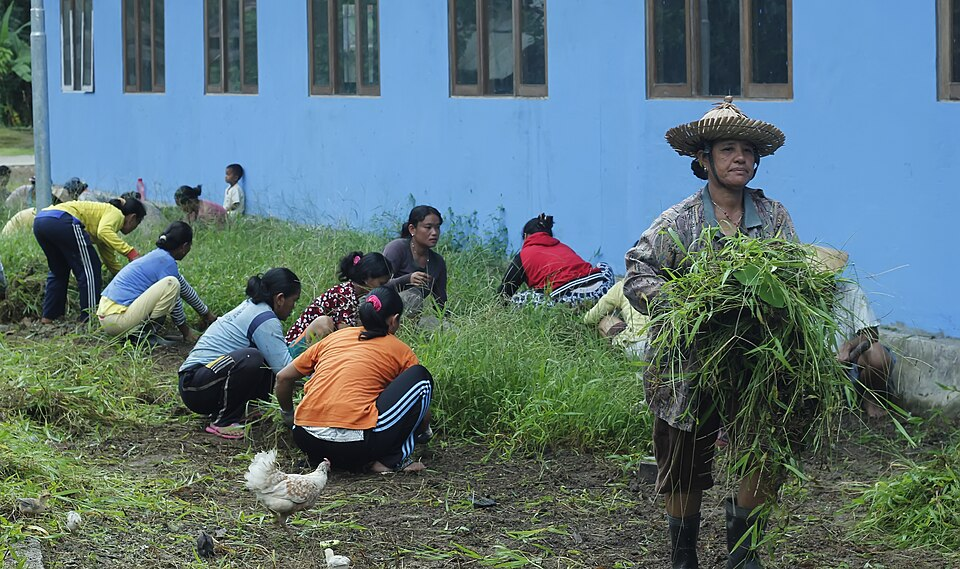
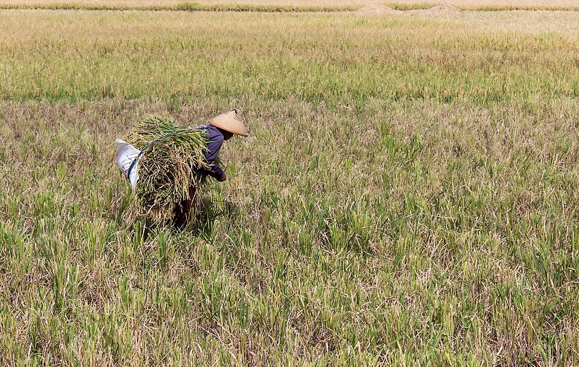
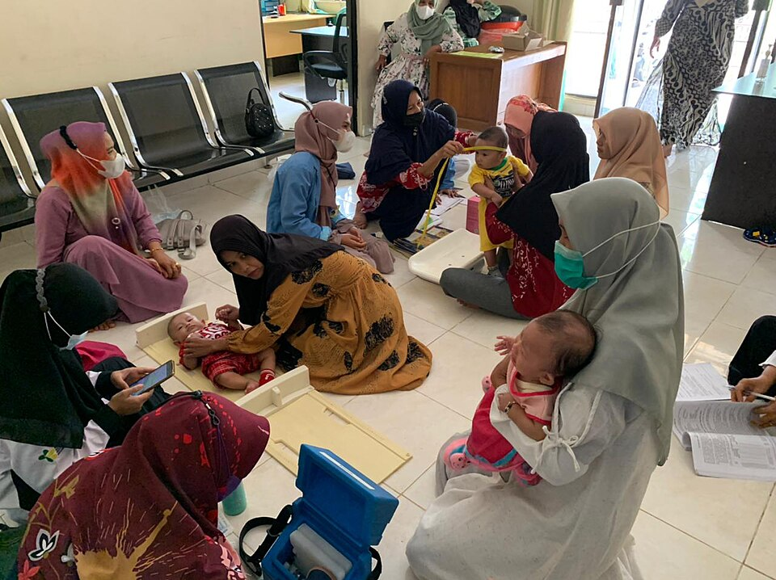
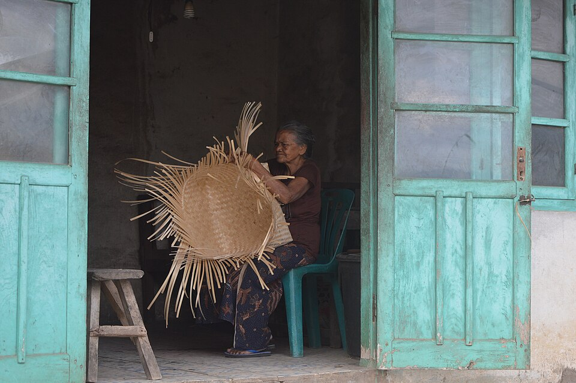

Kabar dari desa
Tidak ada kabar yang cocok. Ubah kata kunci atau pilih "Semua".
Foto kegiatan
Foto ilustrasi dari kegiatan warga sepanjang tahun.




Punya cerita dari dusun Anda?
Kirim foto dan ceritanya ke kantor desa. Kabar dari warga akan dimuat setelah diperiksa.